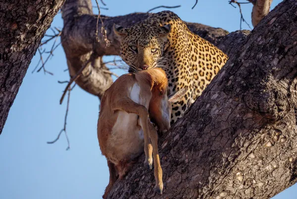

Os Leopardos
Leopardo é um mamífero da família dos felinos. Apresenta um pelo de tom que varia do amarelo-claro ao laranja-avermelhado e repleto de manchas pretas, chamadas rosetas.

O leopardo é um felino pertencente ao mesmo gênero do tigre, leão e onça-pintada, o gênero Panthera. Esses animais são encontrados na África e Ásia, onde ocupam diferentes habitat. São excelentes caçadores e também exímios escaladores de árvore. A capacidade de escalar árvores é uma característica importante, permitindo que o leopardo consiga levar suas presas para o topo de árvores e se alimentar sem medo de que outros animais roubem sua refeição. Os leopardos vivem de 10 a 12 anos no ambiente selvagem e de 21 a 23 anos no cativeiro.
Leia também: Animais em extinção no Brasil e no mundo
Nome Científico
O leopardo é um animal pertencente à classe Mammalia, ordem Carnivora, família Felidae e gênero Panthera. Seu nome científico é Panthera pardus. De acordo com a IUCN, nove subespécies são reconhecidas e estão distribuídas da seguinte forma:
Existem nove subespécies de leopardo, as quais estão distribuídas pela Ásia e África.
- Panthera pardus pardus: África
- Panthera pardus nimr: Arábia
- Panthera pardus saxicolor: sudoeste da Ásia
- Panthera pardus melas: Java
- Panthera pardus kotiya: Sri Lanka
- Panthera pardus fusca: subcontinente indiano
- Panthera pardus delacouri: sudeste da Ásia, ao sul da China
- Panthera pardus japonensis: norte da China
- Panthera pardus orientalis: extremo oriente russo, península Coreana e nordeste da China
Características Gerais do Leopardo
O leopardo é um grande felino que se destaca por apresentar pelagem que varia do amarelo-claro ao laranja-avermelhado e várias manchas negras, que geram confusão na hora de diferenciá-los de outros membros do gênero Panthera, como as onças-pintadas. Essas manchas, que lembram uma rosa, são chamadas de rosetas.
No caso das onças-pintadas, as rosetas apresentam pontos pretos no centro. Isso não ocorre com os leopardos. Suas manchas não possuem esses pontos e são menores e mais próximas do que as observadas nas onças.
Os leopardos são felídeos de grande porte que podem pesar 90 kg e atingir dois metros de comprimento. Vale destacar que seu tamanho varia geograficamente, sendo os leopardos de savana e floresta maiores que os das montanhas e desertos. Outro ponto importante a ser destacado é que os machos tendem a ser maiores que as fêmeas.
Os leopardos possuem pescoço longo, suas patas são curtas e sua cauda é longa, o que ajuda o animal a manter seu equilíbrio. As patas apresentam garras fortes, afiadas e retráteis. O corpo do animal é flexível. Os leopardos são animais solitários com hábitos crepusculares/noturnos. Habitam grandes territórios e marcam sua região com urina, fezes e marcas de garras. São capazes de emitir sons.
Os leopardos são animais muito rápidos, podendo atingir 60 km/h. Além disso, são capazes de saltar mais de seis metros na horizontal e três metros na vertical. Sua agilidade, associada à sua visão e audição acuradas, torna-os ótimos caçadores. Como predadores dos leopardos, podemos citar leões, tigres, hienas e cães selvagens.
- Panteras-negras
Os leopardos de pelagem negra são chamados de panteras-negras. Esses leopardos apresentam a condição do melanismo, desencadeado por um gene que faz com que o indivíduo produza um excesso de pigmento. Uma teoria é a de que o melanismo ajuda na camuflagem desses animais em ambientes onde há abundância de sombras, como florestas fechadas.
Leia mais: Mimetismo – importante método de defesa que também possui outras funções
Habitat do Leopardo
Os leopardos estão distribuídos pela África e Ásia e ocupam uma grande variedade de habitat. São observados, por exemplo, em regiões de savanas, florestas, bosques, habitat montanhosos e até desertos.
Alimentação do Leopardo
Os leopardos são animais carnívoros que se alimentam de diferentes animais, incluindo grandes mamíferos.
O leopardo é um animal carnívoro, alimentando-se, portanto, de outros animais. Sua dieta está relacionada com a disponibilidade de presas bem como a presença de outros competidores maiores. Os leopardos se alimentam de diferentes animais, por exemplo, répteis, pássaros, e pequenos e grandes mamíferos, como os antílopes. Em locais onde há competidores, como leões e hienas, os leopardos escondem sua presa sob a vegetação ou a colocam sobre galhos de árvore.
Leia mais: O que são relações ecológicas?
Reprodução do Leopardo
O leopardo é um animal que tem vários parceiros. A estação reprodutiva dura o ano todo, porém atinge seu pico durante a estação chuvosa. O cio das fêmeas dura sete dias, e elas possuem um ciclo de 46 dias. A gestação dura, aproximadamente, 96 dias, e as fêmeas dão à luz, em média, a cada 15 a 24 meses. A cada gestação, nascem, em média, dois filhotes.
Os filhotes de leopardo, ao nascerem, pesam cerca de um quilo e permanecem com os olhos fechados pela primeira semana. As mães deixam seus filhotes escondidos em tocas para evitar que eles sejam predados por outros animais, como leões. Por volta de seis a oito semanas de idade, os filhotes começam a sair da toca com mais regularidade, e esse é o momento em que iniciam a ingestão de alimento sólido. O desmame ocorre quando eles atingem cerca de três meses, e tornam-se independentes quando atingem 20 meses aproximadamente.
Ameaças ao Leopardo
"Os leopardos, bem como vários outros animais do nosso planeta, estão hoje ameaçados devido à ação do homem. As populações de leopardo sofrem, por exemplo, com a fragmentação de seu habitat, a caça para comércio ilegal e o uso de sua pele, além de retaliação por fazendeiros, que os matam para proteger seus rebanhos.
Por Vanessa Sardinha dos Santos
Professora de biologia